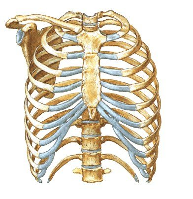
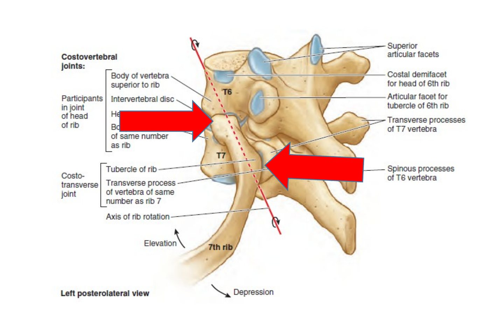
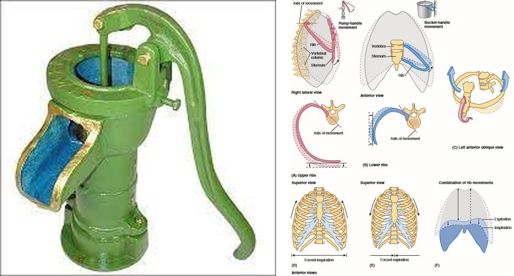

Bölüm 1 · Compages thoracis
Göğüs kafesi iki işi aynı anda yapar: içindeki organları korur ve her solukta biçim değiştirerek havayı akciğerlere çeker. Bu iki iş birbirine ters gibi görünür. Koruyan bir yapının sert, pompalayan bir yapının hareketli olması gerekir. Bu bölüm, kemiklerin biçiminin ve eklemlerin yöneliminin bu çelişkiyi nasıl çözdüğünü anlatır.
Toraks (thorax, göğüs), boyun ile karın arasında kalan gövde bölümüdür. İki kısmı vardır: göğüs duvarı ve onun çevrelediği göğüs boşluğu (cavitas thoracis). Göğüs duvarının iskeleti göğüs kafesidir (compages thoracis ya da skeleton thoracis). Sunumun tanımıyla göğüs kafesini üç kemik grubu oluşturur: önde sternum, yanlarda 12 çift kaburga (costae) ve onların kıkırdakları, arkada 12 torakal vertebra (vertebrae thoracicae) ve aralarındaki diskler (Şekil 1.1).

Göğüs kafesinin biçimi işlevini anlamanın anahtarıdır. Kafes yukarıda dar, aşağıda geniştir. Erişkinde enine çapı ön-arka çapından büyüktür. Enine kesitte böbrek biçimindedir, çünkü vertebra gövdeleri boşluğun içine doğru çıkıntı yapar. Bu çıkıntının iki yanında kalan derin oluklar (sulcus pulmonalis) akciğerlerin kalın arka kısımlarını barındırır. Yenidoğanda ise kafes enine kesitte neredeyse yuvarlaktır ve kaburgalar yataya yakın durur. Bu küçük fark büyük bir sonuç doğurur: kaburgası zaten yatay olan bir bebek, kaburgalarını kaldırarak göğsünü pek genişletemez. Bu yüzden yenidoğan ve küçük bebek ağırlıklı olarak diyaframla, yani "karın solunumuyla" nefes alır. Çocuk dik durmaya başladıkça göğüs uzar, kaburgalar öne-aşağı eğim kazanır ve kaburga hareketinin solunuma katkısı artar (1.6).
Apertura thoracis superior (üst açıklık) arkada T1 vertebra gövdesi, yanlarda birinci kaburgalar ve kıkırdakları, önde manubrium sterni'nin üst kenarı (incisura jugularis) ile sınırlanır. Yaklaşık 5 × 10 cm boyutunda, böbrek biçimli bir halkadır ve yatay değil, öne-aşağı eğimlidir: ön kenarı (manubrium) arka kenarından (T1) yaklaşık iki vertebra düzeyi aşağıdadır. Bu eğimin pratik bir sonucu vardır: akciğer tepesi ve onu örten plevra (cupula pleurae), birinci kaburganın ön kısmının ve klavikulanın üzerine taşar, boyun köküne yükselir (Bölüm 4.5). Üst açıklıktan trakea, özofagus, büyük damarlar (truncus brachiocephalicus, a. carotis communis sinistra, a. subclavia sinistra, vv. brachiocephalicae), nn. vagi, nn. phrenici, sempatik gövdeler, ductus thoracicus ve akciğer tepeleri geçer. Klinisyenler bu açıklığa çoğu zaman "torasik çıkış" (thoracic outlet) der, çünkü kolun damarları ve sinirleri buradan çıkar. Anatomistler ise bu terimi alt açıklık için kullanır.
Apertura thoracis inferior (alt açıklık) arkada T12 vertebra, yanlarda 11. ve 12. kaburgalar, önde kaburga kavsi (arcus costalis: 7-10. kaburga kıkırdaklarının birleşerek oluşturduğu kenar) ve xiphisternal eklem ile sınırlanır. Bu geniş açıklığı diyafram kapatır (Bölüm 2). İki taraftaki kaburga kavsinin xiphisternal eklemde yaptığı açıya angulus infrasternalis denir. Yaklaşık 70-110° arasındadır ve vücut yapısına göre değişir.
Sunum göğüs kafesinin dört işlevini sayar. Her biri kafesin bir özelliğini açıklar:
Sternum (göğüs kemiği), göğüs duvarının ön ortasında yer alan, yaklaşık 15 cm uzunluğunda yassı bir kemiktir. Üç parçası vardır:
Angulus sterni (Louis açısı). Manubrium ile corpus'un birleşim yerinde (art. manubriosternalis) iki parça hafif bir açı yapar. Öne doğru çıkıntılı bu açı toraksın en önemli yüzey işaretidir, çünkü:
Sternumla ilgili üç klinik not: (1) Kalp ameliyatlarında göğüs boşluğuna çoğu zaman sternum orta hattan boylu boyunca kesilerek (median sternotomi) girilir. Kemik ameliyat sonunda tellerle birleştirilir. (2) Sternum kırıkları genellikle direksiyona çarpma gibi yüksek enerjili önden darbelerde görülür. Kırığın kendisinden çok, altındaki kalbin ve büyük damarların yaralanması (kardiyak kontüzyon) önemlidir. (3) Pectus excavatum (çökük göğüs) sternumun alt kısmının içe çökmesi, pectus carinatum (güvercin göğsü) öne çıkmasıdır. Ağır pectus excavatum kalbi sola iter ve solunum kapasitesini kısıtlayabilir.
Her iki yanda 12 kaburga vardır. Hepsi arkada torakal vertebralarla eklem yapar. Önde nasıl bağlandıklarına göre üç gruba ayrılırlar:
| Grup | Kaburgalar | Ön bağlantı |
|---|---|---|
| Costae verae (gerçek kaburgalar) | 1-7 | Kendi kıkırdaklarıyla doğrudan sternuma bağlanır. |
| Costae spuriae (yalancı kaburgalar) | 8-10 | Kıkırdakları bir üstteki kıkırdağa katılır. Birlikte kaburga kavsini (arcus costalis) oluştururlar. |
| Costae fluctuantes (serbest kaburgalar) | 11-12 | Ön uçları serbesttir ve karın arka duvarının kasları içinde sonlanır. Bazı kaynaklar bunları da yalancı kaburgalar içinde sayar. |
Tipik kaburga. 3-9. kaburgalar tipik yapıdadır. Arkadan öne doğru şu bölümleri vardır (Şekil 1.2):
Atipik kaburgalar. 1, 2, 10, 11 ve 12. kaburgalar bu şablondan ayrılır ve sınavlarda "hangisinde ... yoktur" biçiminde sorulmaya en uygun ayrıntılar bunlardadır:
Kaburga kıkırdakları. Cartilagines costales hiyalin kıkırdaktır ve kaburgaları öne doğru uzatır. Göğüs kafesine esneklik kazandırırlar: kafese bir darbe geldiğinde kıkırdak bükülerek enerjiyi emer, solunumda da kaburganın dönmesine izin verir. Kıkırdakların uzunluğu 1'den 7'ye artar, sonra azalır. Yaşla kalsifiye olurlar. Bunun iki sonucu vardır: yaşlıda göğüs kafesi sertleşir, yani göğüs duvarının kompliyansı azalır; göğüs grafisinde de kalsifiye kıkırdaklar opasite olarak görülür.
Kaburga kırıkları. En sık orta kaburgalar (3-10) kırılır ve kırık çoğunlukla angulus costae'nın hemen önündedir. Nedeni, önden gelen bir darbenin kaburgayı bir yay gibi bükmesidir: gerilim kaburganın en keskin döndüğü bu noktada toplanır. Üst iki kaburga klavikula ve kas kitlesiyle, alt iki kaburga da hareketli serbest uçlarıyla korunur. Kırık kaburganın keskin ucu plevrayı ve akciğeri delerek pnömotoraks ya da hemotoraksa yol açabilir (Bölüm 4.6). Alt kaburga (9-12) kırıklarında karaciğer, dalak ve böbrek yaralanması akla gelmelidir.
Yelken göğüs (flail chest). Komşu en az üç kaburga, her biri iki ayrı noktadan kırılırsa göğüs duvarından bağımsız hareket eden serbest bir segment oluşur. Bu segment solunuma ters hareket eder (paradoks hareket): inspirasyonda içe çekilir, ekspirasyonda dışarı itilir. Nedeni adım adım şöyledir: (1) sağlam göğüs duvarı inspirasyonda kasların çekmesiyle dışa açılır; (2) serbest segmentin kemik bağlantısı koptuğu için kaslar onu hareket ettiremez; (3) segmente etki eden tek kuvvet göğüs içi ile dışarısı arasındaki basınç farkıdır; (4) inspirasyonda göğüs içi basınç atmosferin altına inince segment içe çöker, ekspirasyonda basınç yükselince dışa itilir. Sonuçta o bölgedeki akciğer inspirasyonda genişleyemez. Hasta yeterince havalanamaz ve ağrı nedeniyle derin nefes de alamaz. Kırık segmentin altındaki akciğer kontüzyonu tabloyu ağırlaştırır.
12 torakal vertebrayı diğer vertebralardan ayıran özellik kaburgalarla eklem yapmalarıdır:
Atipik torakal vertebralar şunlardır: T1 (1. kaburga için tam bir eklem yüzü ve 2. kaburga için yarım bir yüz taşır, dikeni uzun ve belirgindir), T10 (10. kaburga için tek tam yüz), T11 ve T12 (tek tam yüz, transvers çıkıntılarda eklem yüzü yok; T12'nin alt eklem çıkıntıları lomber tiptedir).
Torakal omurganın deformiteleri göğüs kafesinin hareketini kısıtlar. Ağır kifoskolyozda kaburgalar birbirine yaklaşır, kafes genişleyemez ve restriktif bir solunum bozukluğu (FVC azalması) gelişir. Kitap 1'deki bir soruda kifoskolyozu ve 50 paket-yıl sigara öyküsü olan hastada beklenen spirometri bu yüzden hem obstrüksiyon (FEV₁/FVC < %70) hem restriksiyon (FVC < %80) gösteren miks tipti (2023-2024 S28). Osteoporoza bağlı vertebra kompresyon kırıkları da torakal kifozu artırarak akciğer volümlerini azaltır.
Sunum toraks duvarının eklemlerini yedi grupta sayar (slayt 4). Tablo 1.1 her birinin tipini, bağlarını ve hareketini verir. Solunum açısından en önemli olanlar kaburgayı omurgaya bağlayan iki eklemdir, çünkü kaburganın dönme ekseni bu iki eklemden geçer.
| Eklem | Eklemleşen yapılar ve tip | Bağlar, hareket ve notlar |
|---|---|---|
| İntervertebral eklemler | Vertebra gövdeleri arasında diskler (simfizis, sekonder kıkırdak eklem); eklem çıkıntıları arasında sinovyal düzlem eklemler | Torakal bölgede hareket sınırlıdır, en çok dönme yapılır. |
| Art. capitis costae (kostovertebral) | Kaburga başı ile iki komşu vertebranın gövdesi ve aradaki disk; sinovyal düzlem eklem | Lig. capitis costae radiatum (yelpaze biçimli). Lig. capitis costae intraarticulare başın sırtını diske bağlar ve eklemi iki boşluğa ayırır; tek vertebrayla eklemleşen 1, 10, 11 ve 12. kaburgalarda yoktur. Hareket: kayma ve eksen etrafında hafif dönme. |
| Art. costotransversaria | Kaburga tüberkülü ile aynı numaralı vertebranın transvers çıkıntısı; sinovyal düzlem eklem. 1-10. kaburgalarda vardır, 11-12'de yoktur. | Lig. costotransversarium (boyunla transvers çıkıntı arasında), lig. costotransversarium laterale (tüberkülle transvers çıkıntının ucu arasında), lig. costotransversarium superius (boyunla bir üstteki transvers çıkıntı arasında). Hareket: 1-7. kaburgalarda dönme, 8-10. kaburgalarda kayma. |
| Kostokondral eklemler | Kaburganın ön ucu ile kıkırdağı; primer kıkırdak eklem (senkondroz) | Normalde hareket yoktur. Travmada kaburga kıkırdağından ayrılabilir. |
| İnterkondral eklemler | 6-7, 7-8 ve 8-9. kıkırdakların karşılıklı kenarları; sinovyal düzlem eklemler (9-10 arası çoğu zaman fibröz) | Ligg. interchondralia. Hafif kayma; kaburga kavsini sağlamlaştırır. |
| Sternokostal eklemler | 1. kıkırdak ile manubrium: senkondroz (hareketsiz). 2-7. kıkırdaklar ile sternum: sinovyal düzlem eklemler | Ligg. sternocostalia radiata. 2. eklem manubrium-gövde birleşimine oturur ve bir eklem içi bağla iki boşluğa ayrılır. 1. eklemin hareketsizliği 1. kaburgayı ve manubriumu tek bir birim yapar. |
| Art. sternoclavicularis | Klavikulanın sternal ucu ile manubrium ve 1. kaburga kıkırdağı; eyer tipi sinovyal eklem, eklem diski sayesinde top-yuva gibi işler | Ligg. sternoclavicularia anterius ve posterius, lig. interclaviculare, lig. costoclaviculare (en güçlüsü). Üst ekstremitenin gövde iskeletine tek kemik bağlantısıdır. |
| Sternum bölümleri arasındaki eklemler | Art. manubriosternalis: simfizis. Art. xiphisternalis: senkondroz | Manubriosternal eklem solunumda hafif bir menteşe hareketi yapar ve yaşlıların bir kısmında kemikleşir. Xiphisternal eklem kırklı yaşlarda kemikleşir. |
Tablo 1.1 — Toraks duvarının eklemleri (slayt 4-5).

Sunum iki kostovertebral eklemin hareketini ayrıca yazar: art. capitis costae'da kayma hareketi olur; art. costotransversaria'da 1-7. kaburgalar dönme (rotasyon), 8-10. kaburgalar kayma hareketi yapar. "Buradaki küçük bir hareket kaburga distal ucunda büyük bir devinim hareketine dönüşür." Bu cümlenin nedeni kaldıraç ilkesidir: kaburga, arka ucundaki eksen etrafında dönen 20-25 cm uzunluğunda bir koldur. Bir kapının menteşesindeki birkaç milimetrelik hareketin kapı kolunda uzun bir yay çizmesi gibi, boyundaki birkaç derecelik dönme ön uçta 1-2 cm'lik bir yer değiştirmeye dönüşür (20 cm uzunluğundaki bir kol 5° döndüğünde ucu yaklaşık 1,7 cm yer değiştirir).
1-7. kaburgalar neden döner, 8-10. kaburgalar neden kayar? Fark eklem yüzlerinin biçimindedir. Üst altı-yedi torakal vertebranın transvers çıkıntılarındaki eklem yüzleri çukurdur ve öne-yana bakar. Kaburga tüberkülünün dışbükey yüzü bu çukurun içine oturur ve ancak kendi ekseni etrafında dönebilir. Alt vertebralardaki yüzler ise düzdür ve yukarıya bakar. Tüberkül bu düz yüzde yukarı-aşağı ve öne-arkaya kayabilir. Dönme, kaburganın ön ucunu kaldırır; kayma ise kaburganın yan kısmını yukarı ve dışa doğru açar. Bu iki hareket 1.6'da anlatılan tulumba kolu ve kova sapı hareketlerinin eklem düzeyindeki karşılığıdır.
Klinik bağlantılar. Ankilozan spondilitte omurganın yanı sıra kostovertebral ve kostotransvers eklemler de iltihaplanır ve zamanla kaynaşır. Kaburgalar dönemediği için göğüs genişleyemez. 4. İKA düzeyinde ölçülen derin inspirasyon ile derin ekspirasyon arasındaki göğüs çevresi farkı normalde 5 cm'nin üzerindeyken bu hastalarda 2,5 cm'nin altına düşebilir ve hasta solunumunu büyük ölçüde diyaframla sürdürür. Tietze sendromu ise üst sternokostal ve kostokondral eklemlerin (çoğu zaman 2. ve 3.) ağrılı, şişlikle seyreden iltihabıdır ve göğüs ağrısının ayırıcı tanısında yer alır.
Havayı akciğere iten bir pompa yoktur. Hava, akciğer içindeki (alveoler) basınç atmosfer basıncının altına düştüğü için içeri akar. Bu basınç düşüşünü sağlayan şey hacim artışıdır: Boyle yasasına göre sabit sıcaklıktaki bir miktar gazın hacmi büyüdükçe basıncı düşer. Sunumun ifadesiyle inspirasyon sırasında intratorasik hacim artar ve toraksın üç çapı birden (dikey, enine, ön-arka) büyür. Her çapı farklı bir mekanizma büyütür:
Sunuma göre interkostal kasların kasılması kostovertebral ve sternokostal eklemleri hareket ettirir ve enine ve ön-arka çaplar böyle artar. Bu iki hareketin neden farklı olduğunu anlamak için Şekil 1.2'deki dönme eksenine geri dönelim. Her kaburga collum costae boyunca uzanan bir eksen etrafında döner:

"Kova sapı hareketi ile kostalar yukarı kalkar. Tulumba kolu hareketi ile de sternum öne ve yukarı kalkar." (slayt 6, kutu içinde). Bu iki cümle aynı zamanda iki çapın kaynağını söyler: kova sapı → enine (transvers) çap, tulumba kolu → ön-arka çap; dikey çapı ise diyafram büyütür.
Tulumba kolu = üst kaburgalar + sternum = ön-arka çap. Kova sapı = alt kaburgalar = enine çap. Diyafram = dikey çap. Çeldiricilerde en sık yapılan değişiklik, kova sapı hareketine sternumun öne itilmesini ya da tulumba kolu hareketine enine genişlemeyi yakıştırmaktır. Akılda tutmak için: tulumbanın kolu önde kalkar (sternum), kovanın sapı yanlarda kalkar (kaburgaların yan kısmı). En alt iki kaburga (11-12) ise ön uçları serbest olduğu için pergel bacağı gibi yana açılır ve inspirasyonda m. quadratus lumborum tarafından sabitlenerek diyaframa sağlam bir dayanak oluşturur.
Şekil 1.5 sessiz bir inspirasyonu baştan sona bir zincir olarak gösterir. Zincirin her halkasının nedeni bir öncekidir: kasılma hacmi büyütür; büyüyen hacimde plevral basınç daha negatif olur (−5 cmH₂O'dan yaklaşık −8 cmH₂O'ya); akciğer plevral sıvının yüzey geriliminin bağladığı göğüs duvarını izleyerek genişler (Bölüm 4.4); genişleyen alveollerde basınç atmosferin altına (yaklaşık −1 cmH₂O) iner; hava basınç farkını izleyerek içeri akar. Akciğer dolup alveol basıncı yeniden atmosfer basıncına eşitlenince akım durur.
Ekspirasyon. Sessiz ekspirasyon pasiftir. Kaslar gevşer. İnspirasyonda gerilen akciğer dokusunun elastik geri çekimi ve alveol yüzeyindeki sıvının yüzey gerilimi akciğeri küçültür, göğüs duvarı ve diyafram eski konumlarına döner. Hacim azalınca alveol basıncı atmosferin biraz üstüne (yaklaşık +1 cmH₂O) çıkar ve hava dışarı akar. Zorlu ekspirasyonda (öksürük, egzersiz, obstrüktif hastalık) ise karın kasları ve internal interkostal kaslar devreye girer (Bölüm 2.8).
Hareketin rezervi: akciğer volümleri. Göğüs kafesinin hareket kapasitesinin ne kadarının sessiz solukta kullanıldığını akciğer volümleri gösterir (Şekil 1.6). Sessiz bir solukta yalnızca yaklaşık 500 mL hava (tidal volüm) alınıp verilir. Bunun üzerine derin bir inspirasyonla yaklaşık 3000 mL daha alınabilir (inspiratuvar yedek volüm): diyafram tam kasılır, kaburgalar en üst konumlarına kadar döner ve yardımcı kaslar devreye girer. Sessiz bir ekspirasyonun sonunda karın kasları kasılarak yaklaşık 1100 mL daha çıkarılabilir (ekspiratuvar yedek volüm). En zorlu ekspirasyondan sonra bile akciğerde yaklaşık 1200 mL hava kalır (rezidüel volüm), çünkü göğüs kafesi daha fazla sıkıştırılamaz ve küçük hava yolları kapanarak havayı hapseder.
Bu tablonun KOAH'taki karşılığı göğüs kafesinin biçimine yansır. Hiperinflasyonda akciğerler kalıcı olarak fazla havayla doludur (Kitap 1). Göğüs kafesi inspirasyon konumunda takılı kalır: kaburgalar yataylaşır, ön-arka çap artar ve göğüs fıçı biçimini alır. Yatay kaburganın tulumba kolu hareketiyle daha fazla kalkacak yeri kalmamıştır. Yenidoğandaki yatay kaburgaların neden olduğu sınırlamanın aynısı burada hastalık yoluyla ortaya çıkar. Hasta inspirasyonu sürdürebilmek için yardımcı solunum kaslarını kullanmak zorunda kalır (Bölüm 2.8).
Doğru (yanlış ifade): E. Centrum tendineum çok daha aşağıda, xiphisternal eklem düzeyindedir (T8-T9); VCİ'nin geçtiği açıklık da bu yüzden T8'dedir (Bölüm 2.2). Angulus sterni ise manubrium ile corpus sterni'nin birleşim yeridir.
A doğrudur: angulus sterni'nin yanında 2. kaburga kıkırdağı vardır ve kaburgalar bu yüzden buradan sayılmaya başlanır. B doğrudur: angulus sterni'den T4-T5 diskine uzanan yatay düzlem mediastinumu üst ve alt bölümlere ayırır. C doğrudur: arcus aortae sağ 2. sternokostal eklemin arkasında başlar ve T4'ün sol yanında, yani aynı düzlemde biter. D doğrudur: trakeanın ikiye ayrılması (karina) kadavrada ve sırtüstü yatan kişide bu düzeydedir; ayakta ve derin inspirasyonda biraz daha aşağı iner (Bölüm 7.1).
Doğru: B. Üst kaburgaların dönme ekseni enine yöne yakındır. Bu eksen etrafında dönen ve öne doğru aşağı eğimli duran kaburga, ön ucunu yukarı ve öne kaldırır ve sternumu da öne-yukarı iter. Bu, tulumba kolunun menteşesinde dönüp öne-yukarı kalkmasına benzer ve ön-arka çapı artırır.
A yanlış: kova sapı hareketi alt kaburgalarda görülür ve enine çapı artırır; sternumu öne itmez. C yanlış: diyaframın inmesi dikey çapı artırır. D yanlış: 11. ve 12. kaburgaların tüberkülü yoktur, art. costotransversaria yapmazlar. E yanlış: manubriosternal eklemin kemikleşmesi bir yaşlanma bulgusudur ve hareketi artırmaz, aksine sternumun esnekliğini azaltır.
Doğru: C. 11. ve 12. kaburgalar kısa, serbest kaburgalardır. Başlarında tek eklem yüzü vardır, boyunları ve tüberkülleri yoktur ve bu yüzden transvers çıkıntılarla eklem (art. costotransversaria) yapmazlar.
A yanlış: 1. kaburganın başında da tek eklem yüzü vardır, ama boynu ve tüberkülü vardır; tüberkülü T1'in transvers çıkıntısıyla eklemleşir. B yanlış: 2. kaburga iki eklem yüzlü, boyunlu ve tüberküllü bir kaburgadır; ayırt edici özelliği m. serratus anterior'un tutunduğu pürüzlü alandır. D yanlış: 7. kaburga tipik bir gerçek kaburgadır. E yanlış: 10. kaburganın başında tek eklem yüzü vardır, ama tüberkülü vardır ve T10'un transvers çıkıntısıyla eklemleşir. Sorunun iki koşulunu birlikte yalnızca 11 ve 12. kaburgalar karşılar.
Doğru: D. Art. costotransversaria kaburga tüberkülü ile aynı numaralı vertebranın transvers çıkıntısı arasındaki sinovyal düzlem eklemdir. Tüberkülü olmayan 11. ve 12. kaburgalarda bu eklem yoktur.
A yanlış: kaburga başı ile vertebra gövdesi arasındaki eklem art. capitis costae'dır. B yanlış: sunumun vurguladığı gibi 1-7. kaburgalar bu eklemde döner, 8-10. kaburgalar ise düz eklem yüzlerinde kayar. C yanlış: eklem sinovyaldir; primer kıkırdak eklem kostokondral eklemlerdir. E yanlış: lig. capitis costae intraarticulare art. capitis costae'nın bağıdır; kaburga başının sırtını diske bağlayarak o eklemi iki boşluğa ayırır.
Doğru: A. Tablo yelken göğüstür. Ardışık kaburgalar iki yerden kırılınca aradaki segment göğüs kafesinden kopar ve kasların hareketini izleyemez. Segmente etki eden tek kuvvet basınç farkıdır: inspirasyonda göğüs içi basınç atmosferin altına inince segment içe çöker, ekspirasyonda basınç yükselince dışa itilir (paradoks hareket).
B yanlış: diyafram felcinde paradoks hareket diyaframdadır; felçli kubbe inspirasyonda yukarı çekilir, göğüs duvarında bir segment içe çekilmez. C yanlış: pnömotoraks yelken göğse eşlik edebilir ama paradoks duvar hareketinin nedeni değildir; pnömotoraksta göğüs duvarı içe çekilmez. D yanlış: interkostal kasların felci duvarın hareketini azaltır, ama kemik bütünlüğü korunduğu için bölgesel paradoks hareket yaratmaz. E yanlış: kalsifikasyon kafesi sertleştirir, hareketi azaltır.
Doğru: B. Skalen tüberkülünün arkasındaki oluk a. subclavia'ya aittir; plexus brachialis'in alt gövdesi de arterin hemen arkasından aynı oluğa yaslanır. Bu yüzden servikal kaburga ya da skalen anomalileri arteri ve alt gövdeyi birlikte sıkıştırır (torasik çıkış sendromu).
A yanlış: v. subclavia tüberkülün önündeki oluktan geçer; m. scalenus anterior ven ile arteri birbirinden ayırır. C yanlış: n. phrenicus m. scalenus anterior'un ön yüzünde iner ve göğse a. ile v. subclavia'nın arasından girer, kaburganın oluğuna yaslanmaz. D yanlış: ductus thoracicus boyun kökünde sol venöz açıya açılır. E yanlış: v. jugularis interna boyunda karotis kılıfı içinde iner ve klavikulanın arkasında v. subclavia ile birleşir.
Doğru: A. Tulumba kolu ve kova sapı hareketleri, öne doğru aşağı eğimli duran kaburgaların yükselmesine dayanır. Yenidoğanın kaburgaları yataya yakındır ve göğsü enine kesitte yuvarlaktır. Zaten yatay olan bir kaburganın kalkması göğüs çapını pek artırmaz. Bu yüzden bebek solunumunu çoğunlukla diyaframla, karın duvarını öne iterek yapar.
B yanlış: interkostal kaslar doğumda innerve ve işlevseldir. C yanlış: diyafram yenidoğanda da n. phrenicus (C3-C5) ile innerve edilir. D yanlış: sternumun kemikleşmesi tamamlanmamıştır, ama bu durum kaburga solunumunu engellemez. E yanlış: plevral boşluk embriyonik dönemde oluşur ve doğumda vardır.